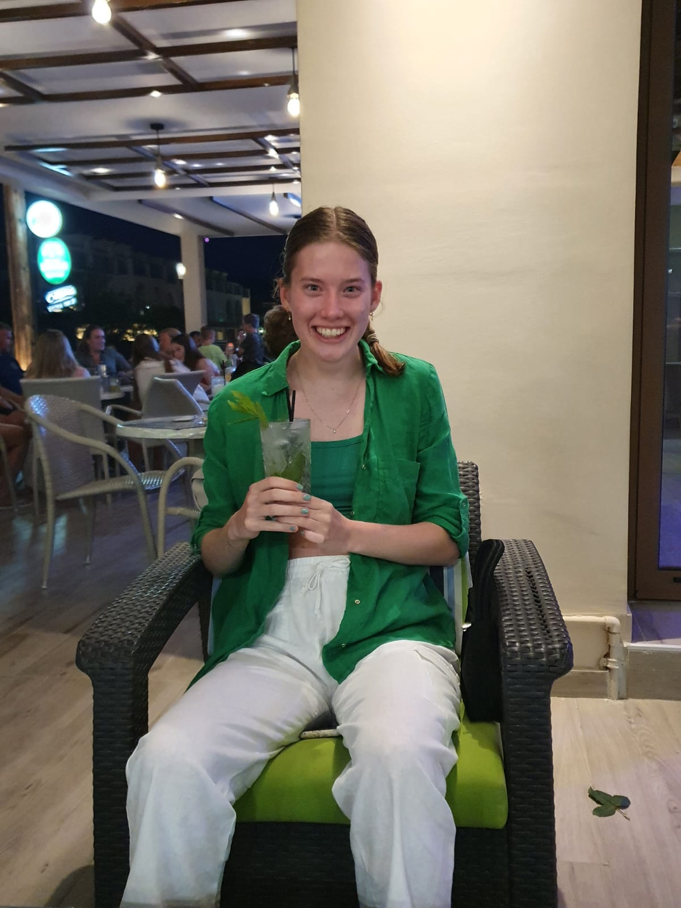
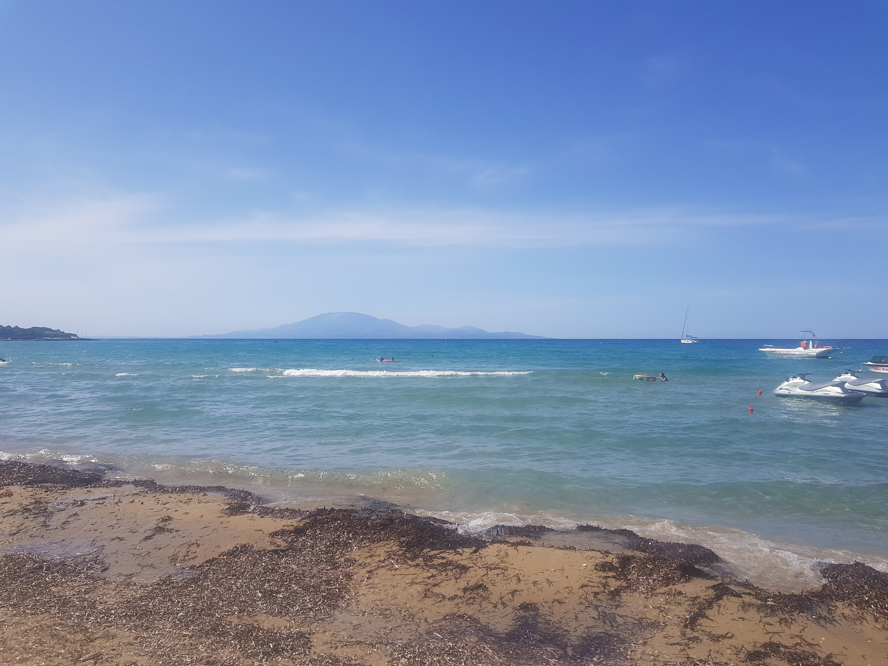
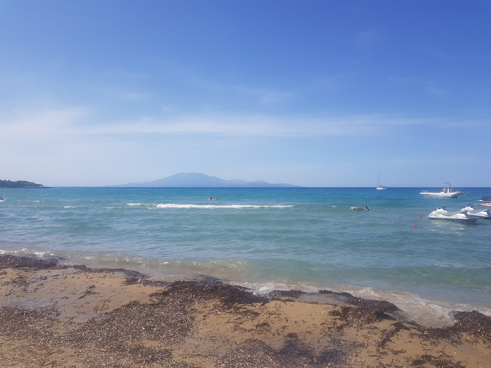

Tsilivi is het plaatstje waar wij zelf verbleven. Wij hebben 2 weken hier vakantie gevierd en we verbleven in de TIME TO SMILE Aphrodite Village appartementen.
Ik vond Tsilivi zelf echt een heel leuk plaatje, het had veel gezellige restaurantjes, levendige bars en leuke winkels.
Ook waren we binnen een paar minuten lopen op het strand, het strand waar wij onze vakantie heen gingen heet: Venus Beach. Hier heb je een breder strand dan de rest, lekkere ligbedden en een goede strandtent waar je lekker kan eten.
In Tsilivi zelf hebben we niet veel bezocht, we zijn het meest naar het strand geweest en 's avonds gingen we meestal uiteten of naar een bar.
De eerste dagen van de vakantie toen we nog geen auto hadden lagen we meestal aan het strand of bij het zwembad. Het strand was echt super leuk, er waren namelijk lekkere ligbedden en een heel lekker strandtentje.
Als lunch aten we meestal daar en de clubsandwich en de kipburger zijn zeker een aanrader, de porties zijn ook groot dus de clubsandwich kon je ook zeker met zn 2e delen.
Vaak las ik een boek op het strand of luisterde ik muziek. Ik had wat boeken van thuis mee genomen en daardoor kon ik ook wel de hele dag op het strand vertoeven.
Tijdens ons verblijf in Tsilivi hebben we een paar restaurantjes uitgeprobeerd, tot echt Grieks eten, italiaans of vis je had het daar allemaal, er was dus voor ieder wat wils.
De restaurantjes die ik zeker zou aanraden zijn:
- Avli Taverne, waar ik echt lekkere souvlaki heb gegeten.
- Sweet Revenge, waar ik lekkere gambas heb gegeten en ze hebben daar ook echt lekkere burgers. Ik heb zelf de kipburger en de portobello burger geprobeerd en ze zijn beide echt heerlijk.
Beide tentjes hebben een hele leuke tuin waar je kan zitten en wat ook leuk verlicht is in de avond, heel knus dus. Bij beide restaurants hebben we ook meerdere keren gegeten.
- Gyroland is ook zeker een aanrader als je niet veel zin hebt om uiteten te gaan, dit is een meer casual plek om te gaan eten, het is een soort bar. Ik heb hier een lekkere typische pita gyros gegeten, het was ook echt heel lekker.
Maar het toetje wat ik hier had besteld was een wafel met aardbeien, witte chocolade en slagroom, het was echt niet normaal lekker. Ook zeker een aanrader als je naar Tsilivi komt.
- Sueno, hier hebben we op de laatste dag van de vakantie als afsluiter nog ontbeten/geluncht, het is echt een heel schattig restaurantje.
Je hebt hier ook echt veel verschillende keuzes uit wat je wil eten, ze hebben zoete dingen zoals wafels en crepes maar ook hartige dingen zoals clubsandwiches en burgers.
zelf hadden we smoothies en vers geperste jus de orange te drinken en als eten hadden we allemaal verschillende broodjes. Ook dit is zeker aan te raden als je een keer ergens wil ontbijten, wat anders is dan je hotel of bakker.

In de avond leeft Tsilivi ook echt, toen wij er waren was het in de avond ook echt gezellig. Er waren veel leuke barretjes die muziek draaide of voetbal uitzonden er waren zelfs soms live-zangers.
Zelf hebben wij ook een paar keer in de avond bij een barretje gezeten om of voetbal te kijken of gewoon gezellig cocktails te drinken. Het Nederlands Elftal speelde op het moment dat wij op vakantie waren en dat wilde wij natuurlijk wel zien, gelukkig werd het uitgezonden bij een bar vlak bij het appartement.
Daar hebben we dan ook gezeten en hebben we ook gezellig wat gedronken met zn 3e.
Dus Tsilivi is zeker ook een gezellig plaatsje, ook in de avond.
Vrienden van mijn ouders waren ook op hetzelfde moment op vakantie op Zakynthos, daar hebben we dus twee dagen mee afgesproken. Eerst kwamen ze onze kant op naar Tsilivi en
daarna gingen we hun kant op naar Kalamaki.
Toen ze onze kant op kwamen hebben we met elkaar geluncht bij de strandtent Venus en hebben we ook aan het strand gelegen. Ook hebben we ze ons appartement laten zien en hebben we ze een rondleiding gegeven daar Tsilivi zelf.
Toen wij hun kant op gingen naar Kalamaki was het echt bloed heet. Eerst zijn wij gestopt bij de boulevard waar we nog even wat gedronken hebben met zn 3e en toen zijn we naar hun hotel gereden.
Mijn ouders kenden Kalamaki ook nog van vroeger toen ze er een keer samen naartoe zijn gegaan, dus ze vonden het weer helemaal leuk om het terug te zien.
Eenmaal aangekomen bij hun hotel hebben we hun kamer even gezien (het zag er echt super mooi uit) en zijn we vervolgens ook naar het strand gegaan.
Het strand daar is wel breder, maar je had op dat stukje waar wij lagen niet echt leuke strandtentjes met bedjes waar je lekker op kon liggen. Maar desondanks dat was het wel heel gezellig en zijn we die dag ook samen gaan lunchen aan het strand.


 
